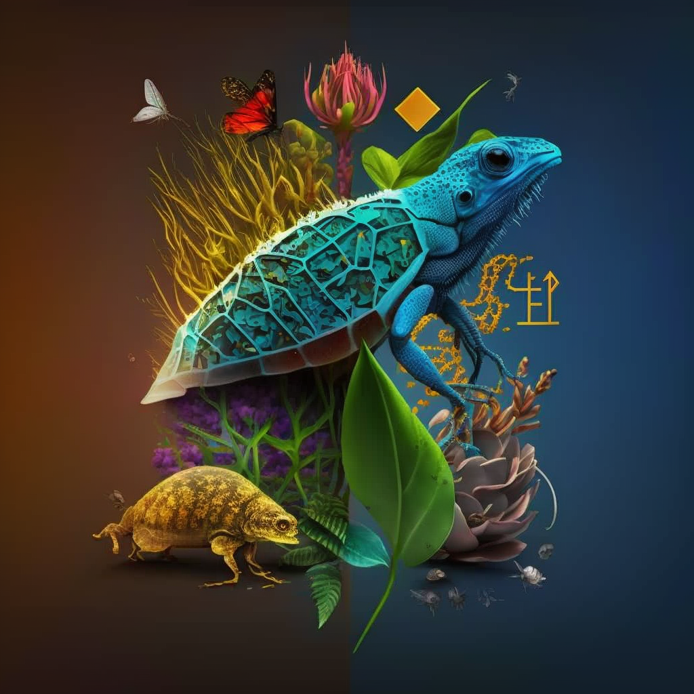

Biodiversity, a term often shortened to "biodiversity," is a concept that encapsulates the incredible variety of life on our planet. It encompasses the rich tapestry of living organisms sourced from various ecosystems—whether terrestrial, marine, or aquatic—and the intricate web of ecological communities they constitute. Biodiversity isn't confined to merely the number of different species; it extends to the diversity within these species and the ecosystems they inhabit.
Defining Biodiversity
Biodiversity finds its definition in the total wealth of species—comprising an array of plants, animals, and microscopic organisms—that thrives in a specific region, country, continent, or spans the entirety of our globe. This encompasses the striking array of life forms, from the towering trees of dense rainforests to the microscopic organisms thriving in a single drop of water. Biodiversity, in its grandeur, reflects the health and vitality of our ecosystems and offers a glimpse into the intricate beauty of our planet's natural world.

Importance of Biodiversity
Conservation of biodiversity is crucial for maintaining ecosystem balance. The rapid loss of numerous species is a cause for concern. Every species on Earth is interconnected in various ways, and the loss of one species can endanger another. Biodiversity provides numerous products and services, and the destruction of natural vegetation for development puts stress on ecosystems.
Preservation of species diversity
Sustainable management and utilization of species and ecosystems
Biodiversity conservation for economic development and poverty alleviation
Crucial role in supporting agriculture and food production
About This Website
This website was created by Sudharsan B and his group mates, and Sudharsan B is currently pursuing B.Tech CSE in Lovely Professional University, in topic focuses on biodiversity.
We provides insights into biodiversity, covering topics like its definition, ecological impact, and conservation strategies.
Emphasizes the importance of preserving species diversity and promoting sustainable ecosystem management.
Educates visitors on the urgency of protecting endangered species and habitats.
Features clear explanations, engaging visuals, and user-friendly navigation.
Serves as a valuable resource for raising awareness about biodiversity's crucial role in our world.